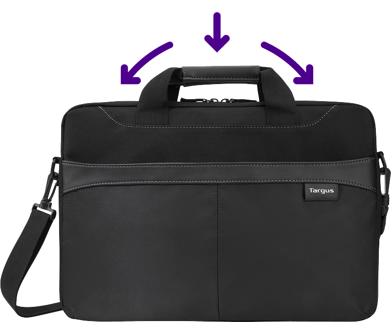

Proteção e praticidade
na
palma da mão.
Proteção
Proteja o seu notebook com facilidade.
Organização
Mantenha tudo organizado sem faltar espaço.
Resistência
Produzida com material de nylon resistente à água, antiarranhões e superdurável.
Praticidade
Transforme a maleta em uma pasta sem dificuldades.
Garantia vitalícia Targus*
Uma mochila para a vida inteira.
Garantia vitalícia Targus*
Uma mochila para a vida inteira.
*A garantia vitalícia cobre apenas defeitos de
fabricação no zíper ou na costura.
A maleta para notebook Slim Business Casual Targus é elegante e preparada para facilitar a sua rotina com muita praticidade no transporte de notebooks, documentos e outros itens.
Mantenha tudo à disposição de forma organizada com o separador interno de documentos instalado no compartimento principal da maleta.
A maleta é produzida em nylon, resistente à água e antiarranhões, e seus zíperes em metal, garantindo um acabamento durável.
A alça de mão retrátil permite que você transforme a maleta em uma pasta sem dificuldades e a alça de ombro removível e ajustável garante o conforto na sua rotina.
Ande sem preocupações com a garantia vitalícia oferecida pela Targus.
*ATENÇÃO: a garantia vitalícia cobre apenas defeitos de fabricação no zíper ou na costura.